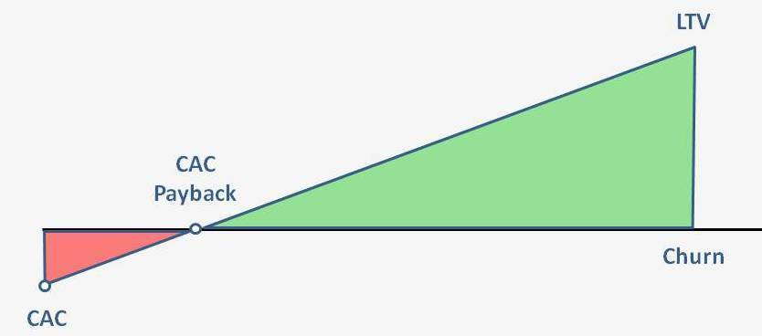
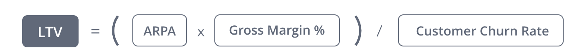

Customer Acquisition Cost
- Customers are what make businesses run.
- Customer
acquisition cost
(CAC) is a metric that has been growing in use, along with the emergence of Internet companies and
web-based
advertising campaigns that can be tracked.
- Your CAC is not just what you spend on advertising! There are many
hidden costs that go into customer acquisition, which may include:
- Discounts and promotions
- Publicity costs (including PR)
- Events and conferences
How You Can Measure CAC
- Basically, the CAC can be calculated by simply dividing all the costs spent on acquiring more customers
(marketing expenses) by the number of customers acquired in the period the money was spent. For example, if
a company spent $100 on marketing in a year and acquired 100 customers in the same year, their CAC is $1.00.
- You need to know your CAC so that you understand if the customer lifetime value (LTV) is more than you pay
to acquire the customer.
How You Can Measure LTV or CLV
- Customer Lifetime Value (LTV) represents the average revenue that a customer generates before they churn,
offset
by gross margin.
- How is LTV useful?
- Balancing customer acquisition spend
- Determining payback period
- Investor reports


Analysis
Customer Analysis Dashboard
Margin Metrics Dashboard